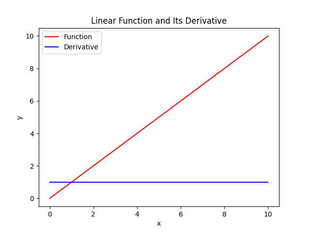
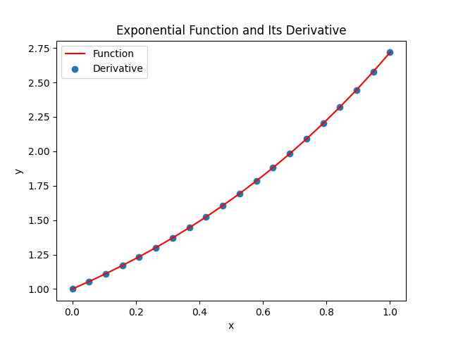
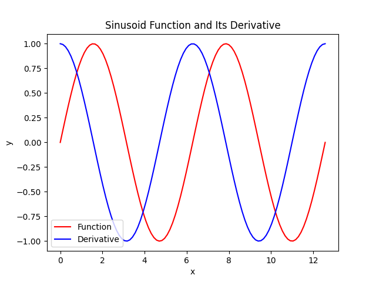

There are two useful ideas from calculus that are used in electronics, derivatives and integrals.
DerivativeA derivative is function that expresses the rate of change of another function. Putting an x values into a functions derivative will return the rate of change of the function at that x value. There are 3 derivatives that come up often in electronics. The first is the derivative of a linear function. By definition, a linear function has a constant rate of change. So the derivative of a linear function is simply a constant.
The second is exp(x) The derivative of exp(x) is also exp(x). This apparently makes it magical.
The third function is a sinusoid (sin(x) and cos(x)). The derivative of a sinusoid is also a sinusoid, but phase shifted 90 degrees. The maximum rate of change of a sinusoid occurs at the zero crossing so this is where the maximum of its derivative will be. The minimum rate of change occurs at the peak. Likewise this is where the minimum of its derivative will be. This will lead to a 90 degree phase shift between the sinusoid and its derivative.
An integral is the signed area under a function within some bounds (technically a definite integral). An integral of a constant is the area of a rectangle. Also for a constant function, If you take one of the bounds and move it, then plot the integral at each x as a function you will get a linear function. The integral of a sinusoid with bounds that extends though many periods is zero. The negative area is equal to the positive area.
Back Next